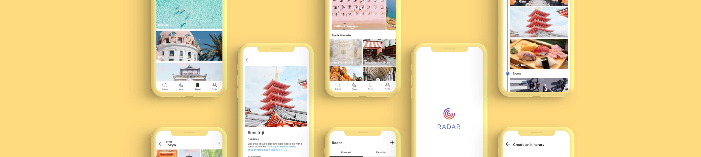

Radar
Overview
People are constantly discovering and saving travel inspiration found on the widely used visual platform, Instagram. Radar is a personal conceptual exercise in leveraging Instagram to meet the needs of today's traveler.
Opportunity
Trip planning requires a lot of decision-making both before and during the trip and research indicates that people make quicker decisions based on visual information. So how might we leverage images sourced from Instagram to aid the trip planning process?
Tasks
- Research
- Ideation
- Wireframing
- Prototyping
- Copywriting
- User Testing
- Visual Design
Platform
iOS
tl;dr
Solution
Planning a trip doesn’t begin when you finally find the time to sit down at your desk and start a Google search. It can begin when you like a picture of a pagoda on Instagram while waiting in life for coffee. Radar turns the user’s Instagram into a travel guide by allowing them to create custom itineraries based on their saved photos from Instagram.
Based on user research, maximizing Instagram allows for all types of planners to take part in the trip planning process without interfering with the way they currently curate trip itineraries.
Get Inspired
To get more inspired, users can browse through itineraries created by featured explorers or check out trending destinations. If the user has a specific destination in mind, they can search that location to see popular itineraries and also view the top images that were taken there.

What’s on Your Radar
After creating potential travel itineraries or favoriting itineraries created by other users, the potential plans are kept track of in one place.
Making Instagram a Part of Your Journey
Instagram isn't just for showcasing photos. Users can make the most out of their saved Instagram photos by creating an itinerary through their favorite images.


Knowing through Liking
During the trip, there’s the potential that things don’t always go according to plan. Previously made itineraries are no longer viable or everything on the list is done. This solution can generate an itinerary based on images you like.
The Process
Research
To get to know my target audience, I conducted user interviews with people that fulfilled the following criteria:
Based on their answers regarding general travel experience, how they typically plan their itinerary, and their experience with technology, I gathered all my findings onto an affinity diagram to uncover insights into my users.
Insight #1
It's Okay to Be a Little Extra
Thinking back to their trip, users don’t regret their amount of planning, rather all users wish that they had planned more.
Insight #2
Active vs. Passive Planners
Users have specific ways when it comes to curating a trip itinerary which separate them into the active and passive categories. Active planners use multiple apps to plan the day-to-day while passive planners will just look at Instagram or blogs just prior to their trip.
Insight #3
Maximize Instagram
Instagram is used as a travel planning solution for both the discovering and planning stage—as travel inspiration and to find out what to pack based on recent images.
Competitive Analysis
Based on the user interviews, I completed an audit on TripAdvisor and Yelp, which were two of the most frequently mentioned apps used for travel, and Instagram, a frequently used social media app as well as an indirect competitor.
Strength
TripAdvisor is the most popular travel product with their main focus being on travel-related content—from crowdsourcing reviews on points-of-interests, restaurants, and accommodations to booking flights, lodging, and tours. Users are also able to create an itinerary based on the places they have saved within the app.
Weakness
Being the leading source on travel content, users are inundated with information and choices requiring a lot of scrolling and reading before coming to a decision.
Strength
When it comes to reviews on local restaurants, nightlife, and home services, Yelp is a popular product on crowdsourced reviews. Providing relevant details and the ability to ask questions to the community.
Weakness
For international travel, reviews on Yelp aren’t as robust and users are limited to just restaurants and nightlife. And although users can bookmark interesting places, the only thing they can do with it is use the list as a reference.
Strength
The most popular photo-sharing social networking platform where users can connect with friends and follow people of interest. It is evolving into a real-time communication platform and users are finding other use cases— shopping and travel inspiration.
Weakness
For unintended purposes such as travel, Instagram is not suited as a travel planning solution.
User Persona
Joseph, 27, Product Manager
Main hobby is photographing buildings and landscapes where he posts to his following on Instagram. He travels at least twice a year for a week at a time and tries not to go to the same destination twice. He plans an itinerary ahead of time but since he’s a solo traveler, it’s more of a guideline than a commitment. He’ll frequently go off course because he spends too much time getting a good photo so he has to figure out where to go next.
Needs
- To maximize his time at the destination
- A way to figure out what to do next quickly
- Identify sites that are worth going to
- To get the best possible photo
Pain Points
- Wasting time figuring out where to go next
- Scrolling through a long list of possibilities
- Figuring out what else he can do in an interesting area
Journey Map
With Joseph in mind, I created a journey map to better empathize with his feelings, wants, and needs while also helping me to understand his experience at different points of the journey. Through mapping out Joseph’s emotions and actions, I was able to pinpoint areas of opportunities.
Task Flows
The two main features of Radar is the user being able to create an itinerary by digitally adding images they have into time slots and the app’s ability to generate a custom itinerary based on their interests
User Creates New Itinerary
App Generates New Itinerary

Sketching & Wireframing
Through rapid paper prototyping and wireframing, I was able to determine key screens and components before adding more fidelity.
Future Features
- Sharing capabilities
- Connecting with friends and seeing what’s on their Radar
- Using machine learning to generate more personalized itineraries based on what the user has already favorited or created
Conclusion
When it comes to trip planning, people either plan day-to-day or hope for the best when they get to their destination. My goal in designing Radar was to create a solution for both types of planners. A solution that eased the current planning process without introducing something that was completely unfamiliar. With Radar, I maximized today's popular image-sharing platform into a travel guide.